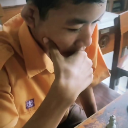
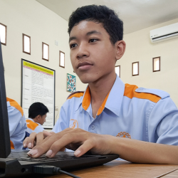
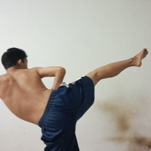

Saya memiliki hobi bermain catur sejak kecil, saya bermain catur ini disebabkan saya yang dari kecil senang bermain dan saudara saya menyarankan saya untuk memilih ekstrakulikuler catur di SD, catur tidak hanya bermain, melainkan mengatur strategi untuk mengalahkan lawan

Saya yang dulu senang bermain game, membuat saya terinspirasi untuk membuat game itu sendiri, dengan tercapainya keinginan untuk membuat game tersebut, saya perlu menguasai beberapa keperluan yang dibutuhkan salah satunya yaitu coding

Karate ini adalah salah satu bela diri yang saya dapat kuasai, karate sendiri adalah bela diri yang saya pilih karena saya yang diminta untuk memiliki kemampuan bela diri di masa remaja, saya memulai karate pada kelas 10 dan sekarang saya sudah memiliki pengalaman selama 1 tahun